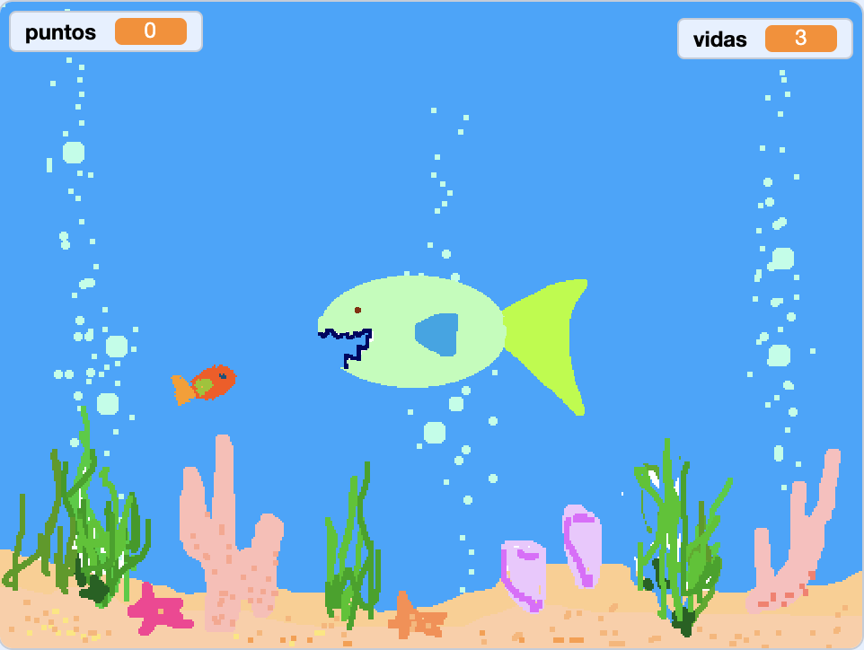
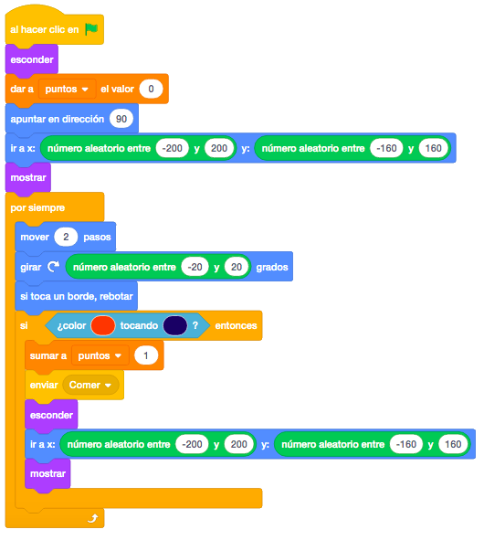
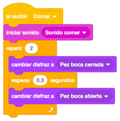
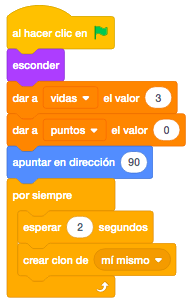
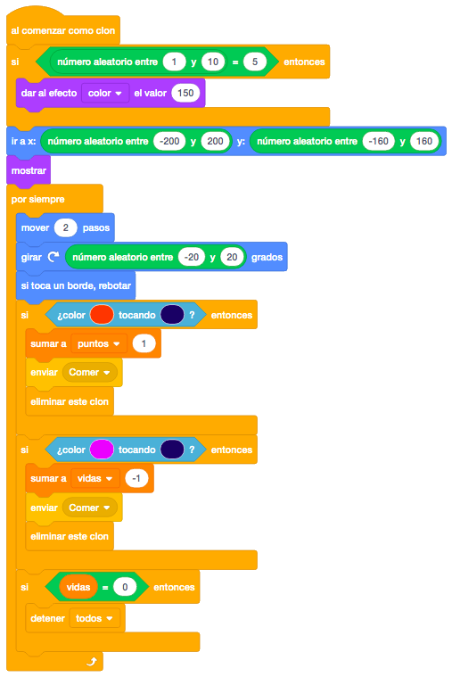

Para este juego necesitaremos un pez grande que será nuestro personaje y un pez pequeño, del cual haremos clones y será la comida de nuestro pez grande.
Usaremos un escenario del fondo del mar de la biblioteca de Scratch.
Para descargar los objetos necesarios para el juego, lo haremos desde este link. Es un archivo comprimido con 2 objetos. Lo descargaremos y lo descomprimimos en el directorio del alumno.
El juego consiste en que el pez comilón perseguirá a los pececitos que van apareciendo en la pantalla y se
los ira comiendo, dándonos puntos por ello. Aleatoriamente aparecerá un pez al que le cambiaremos el color
con efectos y en lugar de darnos puntos, nos quitará una vida.
Empezaremos colocando el pez protagonista en el centro de la pantalla. Le pondremos el disfraz con la boca
cerrada al empezar, ya que el de la boca abierta solo lo mostraremos cuando se vaya a comer un pez.
Para el movimiento, tan solo apuntaremos al puntero del ratón y lo deslizaremos hacia él.

Programaremos ahora el pez pequeño. Empezaremos a programarlo sin clones y ver que funciona correctamente.
Empezaremos por crear una variable para contabilizar los puntos y la inicializaremos a "0". Colocaremos a
nuestro pez en la pantalla de una forma aleatoria y lo mostraremos.
Para el movimiento, lo haremos en la dirección en la que está y le daremos un pequeño giro para darle mayor
realismo. Además añadiremos el bloque "Si Toca Un Borde, Rebotar" para que no se nos cuele por los laterales
de la pantalla.
Haremos un control para que si nos toca el pez grande con la boca, sume un punto, y vuelva a poner el pez en
otra posición aleatoria de la pantalla. También llamaremos a un mensaje "Comer" que programaremos después en
el pez grande.

Programaremos en el pez grande, el mensaje "Comer". Lo que haremos será hacer un sonido de comerse el pez y abrir y cerrar la boca.

Ahora programaremos los clones del pez pequeño. Lo que dejaremos en el bloque de "Al Hacer Click En La Bandera" será la inicialización de las variables, donde crearemos otra nueva para guardar las vidas. También ocultaremos el objeto principal.
Siempre que utilicemos clones, el objeto principal lo esconderemos y trabajaremos únicamente con los clones.
Ahora haremos un bucle donde cada 2 segundos crearemos un clon

El resto, lo moveremos a un bloque "Al Empezar Como Clon".
En este bloque, añadiremos un nuevo control para que de vez en cuando, le demos un efecto de color al pez y
ese pez en lugar de sumar puntos, nos quitará una vida.
Dentro del bucle, también añadiremos el control para cuando nos comamos el pez de otro color. Cuando hagamos
esto, le quitaremos una vida, mandaremos el mensaje "Comer" y eliminaremos el clón. Haremos también un
control para que cuando el pez se quede sin vidas, detenga el juego.
También cambiaremos que cuando el pez grande se coma al pequeño, en lugar de ocultarlo y recolocarlo,
eliminaremos el clon.
La diferencia entre eliminar un objeto y eliminar un clon es que para un objeto pondremos el bloque "Esconder" y en un clon pondremos "Eliminar Este Clon".

Podremos añadirle una pantalla final de Game Over cuando nos quedemos sin vidas.
Y el juego quedaría así.

Para ver el juego terminado pulsa
aquí.
Para descargarte el juego terminado pulsa
aquí.